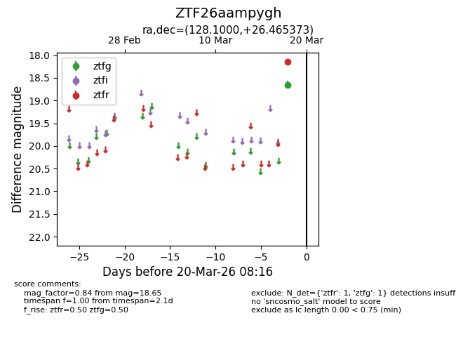
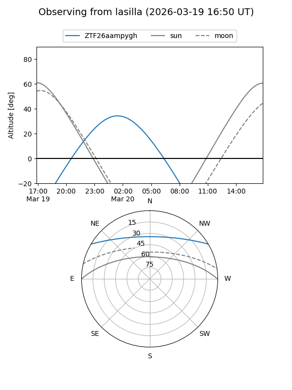
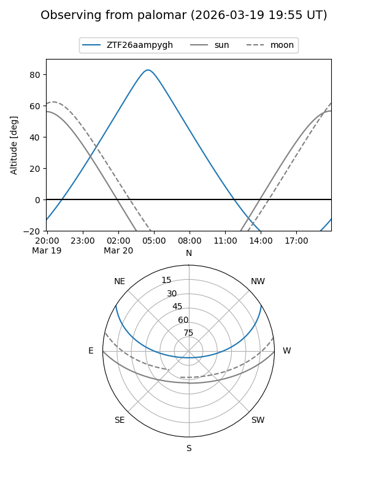

ZTF26aampygh
Target ZTF26aampygh at 2026-03-20 08:18
Aliases and brokers:
FINK: link
Lasair: link
ALeRCE: link
alt names
ZTF26aampygh (ztf,fink_ztf)
Coordinates:
equatorial (ra, dec) = 128.1000,+26.46537
equatorial (HMS+DMS) = 08:32:23.99,+26:27:55.34
galactic (l, b) = (197.5630,+32.88461)
Flags:
Photometry:
last ztfg=18.65, ztfr=18.14
1 ztfg, 1 ztfr detections
Lightcurve

Visibility


Additional plots